The Unbearable Weight of the Bundle Adjustment and $50K money prize
This year Image Matching Challenge introduced two big changes. First, we went from two-view matching to full Structure-from-Motion as a task. Actually, the multiview track was present in pre-Kaggle era of IMC – in 2019, 2020 and 2021, so we kind of returned to the roots.
Participants were given with the sets of images and output should be the cameras poses for all of them. Second, thanks to our sponsors – Google, Haiper, and Kaggle itself, we were able to propose $50k prize fund. With the strict open license condition (MIT/Apache 2/etc) for the “in-money solution”.
3D reconstruction is not cheap
While going from image pairs to image sets might seem a small change, it has a significant impact on cumpute requirements. For the two-view case, one can run almost everything on GPU, e.g. SuperPoint for feature detection, SuperGlue for image matching, or the LoFTR for detector-less image matching. The only CPU part is the RANSAC, which can take as little as 10ms per image pair for VSAC, so not a big deal.
For the multiview case, on the other hand, one needs to performs the bundle-adjustment, which is a CPU-heavy task. Kaggle virtual machines, in addition to that, offer only 2-core CPU, so the 3D reconstruction itself becomes the main computational bottleneck of the whole process.
Example solution
To provide the participants a headstart, we have worked with Kaggle engineers to include the pycolmap into the default Kaggle kernels. Based on it, we have provided an example submission, which uses local features included in kornia library: LoFTR, DISK, and KeyNet-AffNet-HardNet.
All of them have Apache 2 license, and has shown a good performance in one of the previous IMCs: LoFTR was a part of top solutions in 2022, recap, DISK - in 2020, recap and 2021, and KeyNet-AffNet-HardNet - one of the leaders in the original IJCV-2020 publication.
The LoFTR example, however, was so heavy, that was causing time-out error without the modifications.
New datasets, new challenges: UAV-to-ground, day-night, repeated patterns, wiry objects, scale change
In 2023 we have prepared 3 new datasets - Heritage, Haiper and Urban.
Each dataset has been split into “training” – public, and private part. The parts were geographically disjoint, but shared a similar nuisance factors. We haven’t yet decided if we are going to release “hidden” part or not.
Heritage
This dataset features the high resolution photos of ancient buildings, taken with DLSR cameras from the ground, as well as UAV photos. Particular challenges are:
- large scale change (up to 20x), from that overview photo to the close-up of the small detail, together with in-plane rotation
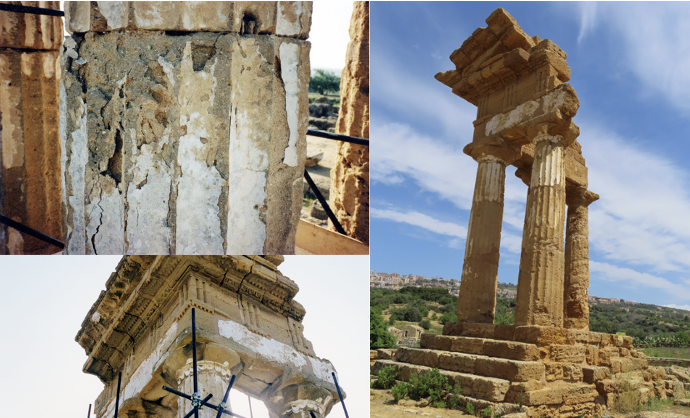
- “banana effect”, when the flat surface is often reconstructed as curved due to low overlap between consecutive frames and slight misalignments, which accumulate altogether.
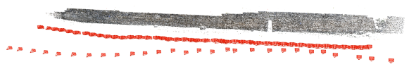
wall from Heritage dataset- high-resolution image processing. See above about the computational challenges of bundle adjustment and then multiply that by high resolution AND large image number. Also, the most of deep learning features (DISK, LoFTR) can easily give you CUDA OOM error when run on 20 Mp image pair.
Haiper
Haiper (training) dataset is similar to captures for NERFs - layered “dome” of cameras, going around some object. The object itself is often thin (bicycle) or textureless (statue). The test part of the dataset has very small number of images, making the viewpoint difference the biggest challenge.
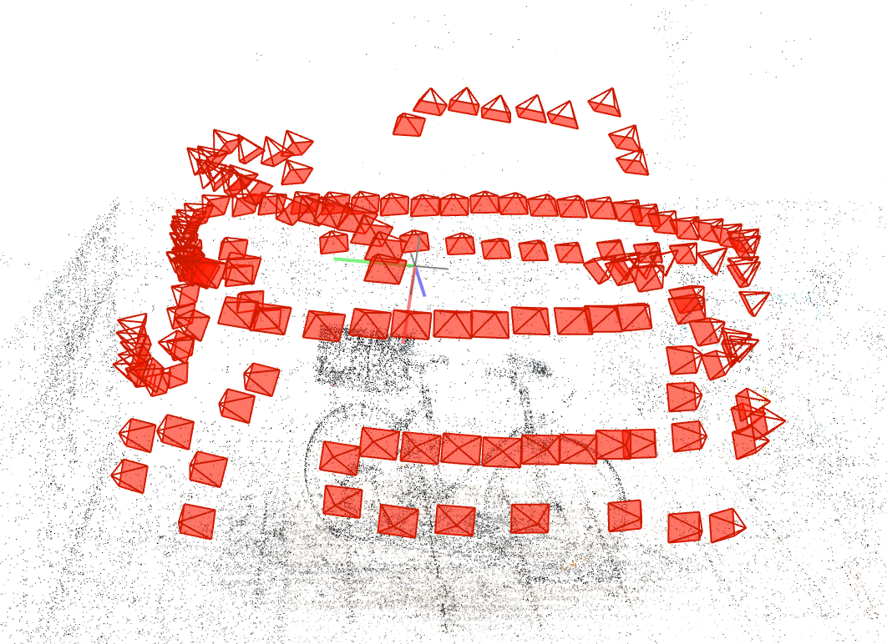
If IMC-2023 have discovered and used “Map-free Visual Relocalization” for training their pipelines, that would likely help them with Haiper dataset as well. However, everyone has missed this opportunity, including us - organizers.
Urban
The Urban dataset is, probably, the most similar one to IMC2020 PhotoTourism dataset. It covers photos of buldings in city, similar to PhotoTourism.
Here is the photos of the “Kyiv Puppet Theater” – the easiest and public – part of the dataset.
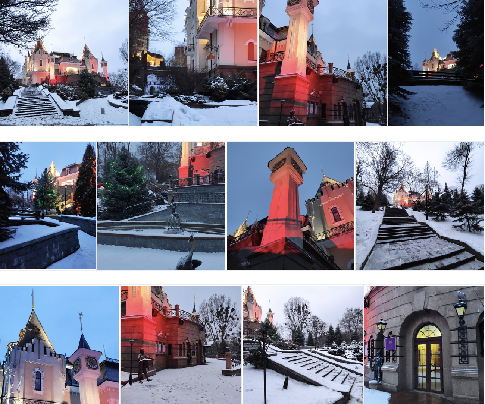
In addition to the day-night photos, the hidden part of the dataset features highly symmetrical objects, such as the photo I took yesterday in Český Krumlov. The camera poses are actually look into each other, so visual overlap is zero. The only chance of non-wrongly-matching them, is either considering all the photos altogether, or utilizing the background. None of the existing feature matching solutions does this, as far as I know.
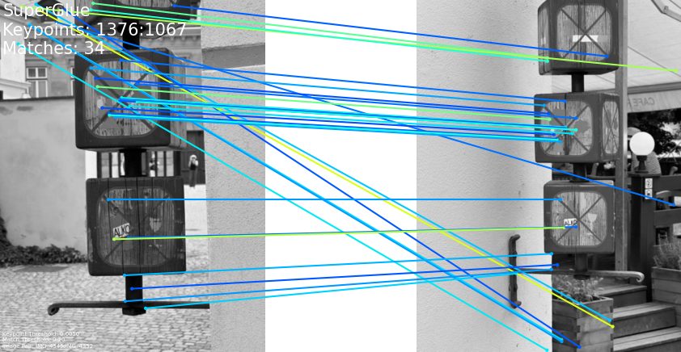
Findings from the competition
There are no 3d reconstruction libraries besides colmap
At least, there are none, which you can easily compile on Kaggle kernel and then use from python notebook. I personally really hoped to see some global SfM solution like Theia or maybe OpenSfM to appear among the top-solution,as it could provide a significant speed-up over the incremental SfM like Colmap. Python bindings and ease of compilation is crutial factor here.
No NERF-like or any other solution than classical SfM
Despite all the progress, it seems that if one doesn’t have any additional information, such as RGBD, or initial ARKit cameras poses, the best thing one can do with a challenging image collection, is classical SfM. No SparsePose, no FORGE
Global descriptor-based co-visibility is hard
Given that exhaustive image matching grows quadratically with number of images, it is very tempting to filter out some of those image pairs, based on some kind of covisibility criterion. And the simplest/fastest to compute is global descriptor one - you get a single vector per image, calculate global image similarity and remove those image pairs, which similarity is below threshold. Or take the top-K most similar images. In fact, I have used such approach in our paper “Efficient Initial Pose-graph Generation for Global SfM”. However, what worked on large (thousands) image collections with dense viewpoint coverage, as 1DSfM, does not work that well on sparse image collections with many close-ups, rotations and illumination changes.
Some teams had moderate success with NetVLAD and DINOv2 global descriptors, however, the best strategy, it seems, to use the two-view matching itself, but on a smaller resolution – such as SuperGlue, or KeyNet-AffNet-HardNet-AdaLAM.
PixelSfM is good idea, but needs improvements
Many participants has tried to improve the initial SfM camera poses by utilizing PixelPerfectSfM – the feature-metric bundle adjustment. While it improves results, it took a lot of time and especially memory, which rendered it unpractical for many teams. Another challenge is the package compilation itself, which is not easy either.
1st-place team proposed a novel version of the correspondence and poses refinement instead - called Detector-Free Structure from Motion.
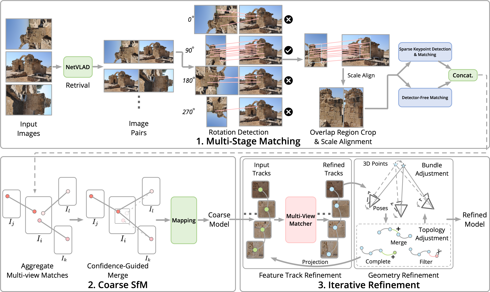
Rotation-invariance is important, but easy to achieve for SuperGlue and LoFTR
Just rotate one of the images 4 times and select the best matches. Here is the image of the 3rd place solution, explaining it all.
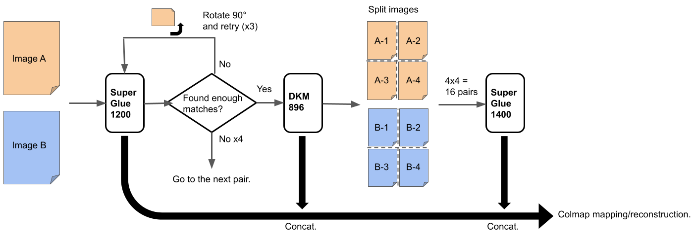
Initial image pair setup in Colmap is suboptimal
Several teams reported that manually setting the image pair to start incremental reconstruction in Colmap improved results. One even can improve results by running the incremental reconstruction several times.
Many things do not work until they do
Many teams have reported that LoFTR or DKM doesn’t work for them - but both LoFTR and DKM are part of top-5 solutions. Recent “SiLK” keypoints are reported as not working, but maybe nobody just found a proper way to use them.
“Old” features are not done yet - KeyNetAffNet-HardNet solution.
5th place actually end up in money by using an modified example submission with a classical pipeline using such ancient local features as DoG, Harris and GFTT, together with KeyNet (2019), coupled together with local affine shape estimation by AffNet, patch descriptor HardNet and handcrafted AdaLAM matcher.
Basically, that is cleverly engineered submission of the off-the-shelf local features, available in kornia.
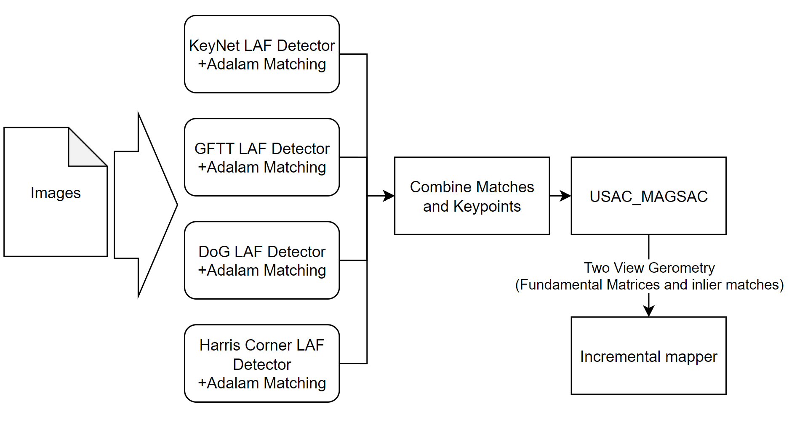
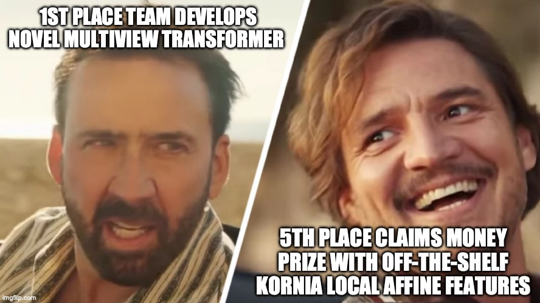
Permissive license and faster SuperGlue is out - LightGlue
LightGlue - the solution by 7th place team and likely 2nd money prize, presents a SuperGlue-like architecture with early-stopping for easy image pairs and bunch of training recipes. It also uses somewhat unpopular, but well-performing ALIKED local feature
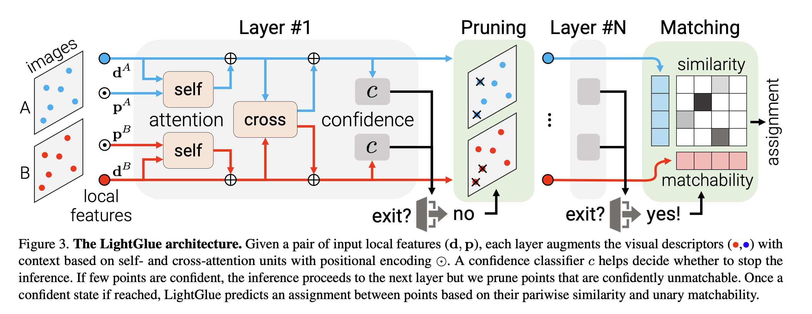
Here is the quite from the paper about tricks that matter:
Since the depth maps of MegaDepth are often incomplete, we also label points with a large epipolar error as unmatch- able. Carefully tuning and annealing the learning rate boosts the accuracy. Training with more points also does: we use 2k per image instead of 1k. The batch size matters: we use gradient checkpointing [10] and mixed-precision to fit 32 image pairs on a single GPU with 24GB VRAM.
In addition to that, homography-pretraining is crucial for the Light/Super-Glue performance.
No lines, monodepth or semantic segmentation this year.
Actually I hoped to see Limap line SfM or some kind of monocular depth models used. Bad luck.
Per-dataset results
Heritage
The Heritage dataset results show the biggest variability among the methods/worst/best case performance.
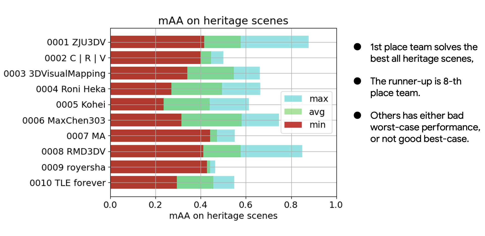
Urban
Because the main Urban dataset challenge – repeated patterns and symmetrical structures – cannot be even theoretically addressed by better two-view feature matching, it is the hardest dataset. No single team tried to work on this part, so surprise it is hard.
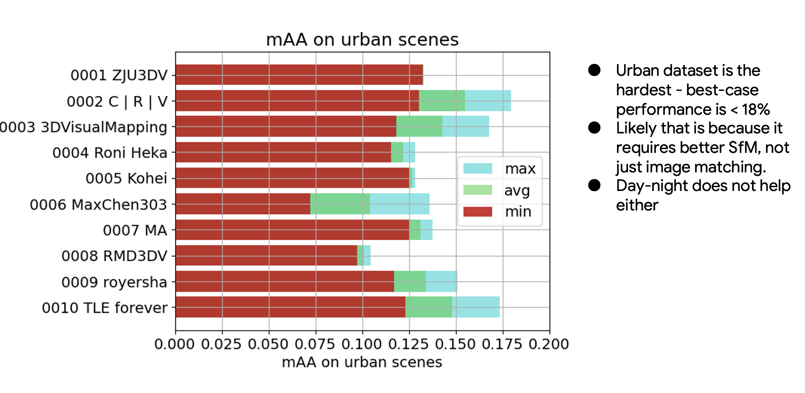
Haiper
The Haiper results are either hit or miss w/o much difference between methods. 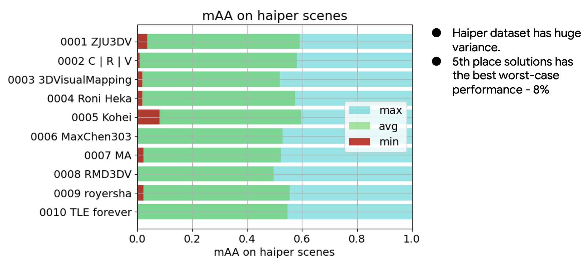
Conclusion: SfM is far from solved
As in many other computer vision tasks, if something seems to be “solved”, that is just because the datasets are old and obsolete. You still need a good dense capture to do the 3D reconstruction. Many images, many compute, or the additional data like inertial module/GPS, or skilled person to do the capture, is required. See you hopefully next year.
Everything you (didn’t) want to know about image matching